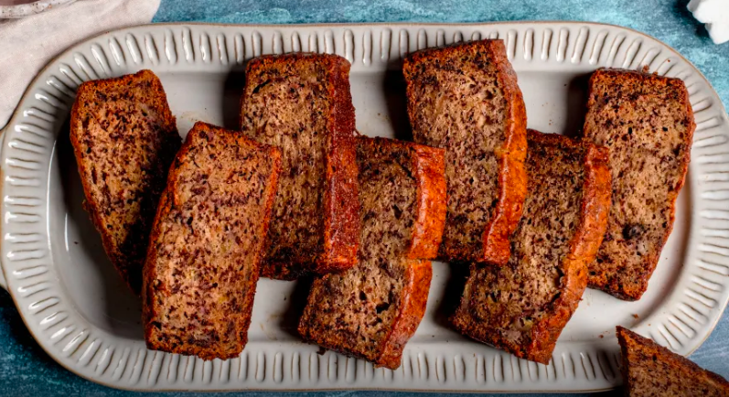

Banana Bread

The lack of oil is not something I usually condone in a quick bread but it works here. And with the whole wheat flour it's a bit health food-y but still full of sugar. Mmm, just right...
Ingredients:
- 8 very ripe Bananas, mashed
- 1 1/3 cup brown sugar
- 2 t vanilla extract
- 2 1/3 cup Whole Wheat Flour
- 1 1/2 t Baking Soda
- 1 1/2 t Baking Powder
- Cinnamon, as much as you like
- 1 t Nutmeg
- Chopped Pecans, if you're feeling it
Steps:
- Preheat oven to 350F
- Mix together banana, sugar and vanilla in a large bowl
- In a separate bowl whisk together the rest of the ingredients
- Mix dry ingrediens into the banana mixture being careful not to overmix
- Pour into a greased loaf pan and bake for 1 hour or until toothpick comes out clean
- I like to eat a slice with plain yogurt on top